Трохи історії про місто Нікополь
Запорозькі козаки
Запорозькі козаки це власне ті, хто і заснував наше місто у 1639 році, збудувавши тут Микитинську Запорозьку Січ. Нікополь - єдине місто в Україні, яке може похвалитися тим, що веде своє літочислення від Січі. Окрім Микитинської, на території Нікопольського району знаходилися ще чотири Запорозькі Січі: Томаківська, Базавлуцька, Чортомлицька та Покровська (Нова). Уся історія нашого міста, його легенди та перекази тісно пов’язані з історією козацтва. Ми вважаємо, що саме пам’ятника козакам-засновникам дуже бракує в Нікополі.
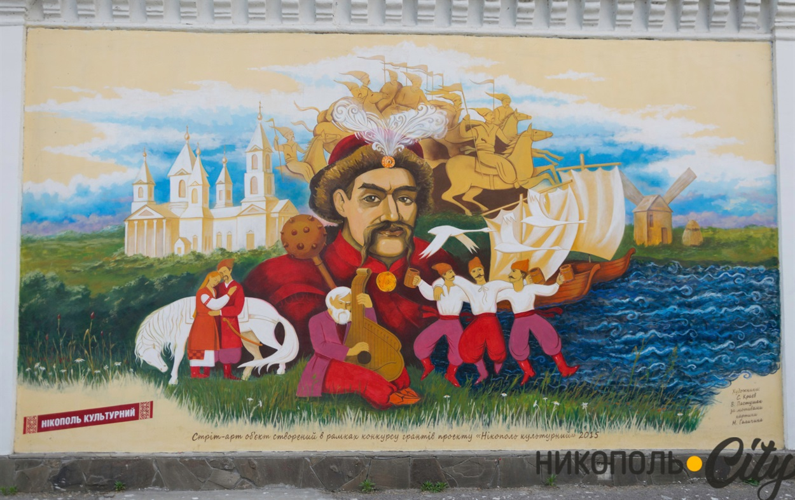
Богдан Хмельницький
Богдан Хмельницький - він не лише пам’ятник (с). Хоча й пам’ятник теж. Не багато хто знає, що саме в Нікополі (на той час - Микитинська Запорозька Січ) його було обрано гетьманом, і саме звідси розпочалася Національно-визвольна війна 1648–1654 років. До речі, в Нікопольському музеї зберігається хрест, під яким молився Хмельницький перед початком воєнних дій. На пам’ять про ті події у 1954 році в Нікополі встановили пам’ятник Хмельницькому.
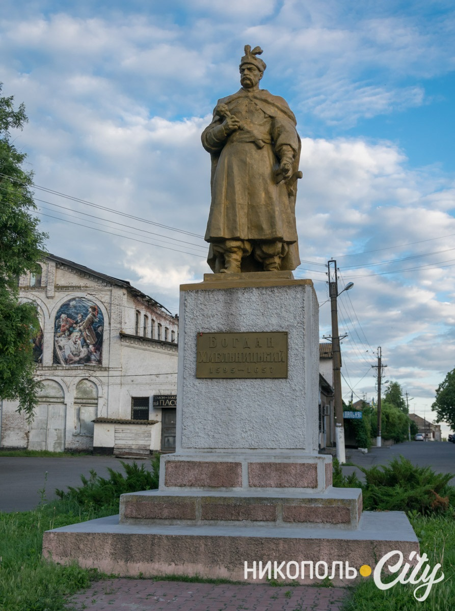
Атомна станція ЗАЕС – Військова база РФ
Нікополь може похвалитися найнезвичайнішим видом із міської набережної. Шість енергоблоків Запорізької атомної електростанції здатні стривожити туриста. Але не нікопольців, які спостерігають цей мальовничий краєвид щоразу, коли їм хочеться поплавати або прогулятися вздовж берега водосховища. Будівництво ЗАЕС розпочали у 1981 році на березі Каховського водосховища. Тепер це найбільша атомна станція в Європі за виробництвом електроенергії та шоста у світі
Саме тут зараз перебувають війська РФ, які здійснюють щоденні цілодобові обстріли з РСЗВ ГРАД, артилерією, та щохвилинно ФПВ та літачками камікадзе міста Нікополя прилеглих районів. Атомну станцію вони використовують як військову базу, та навчальній центр безпілотних систем по живим людям та цівільним авто та домівкам.
Фото зроблене до вторгнення РФ в Україну
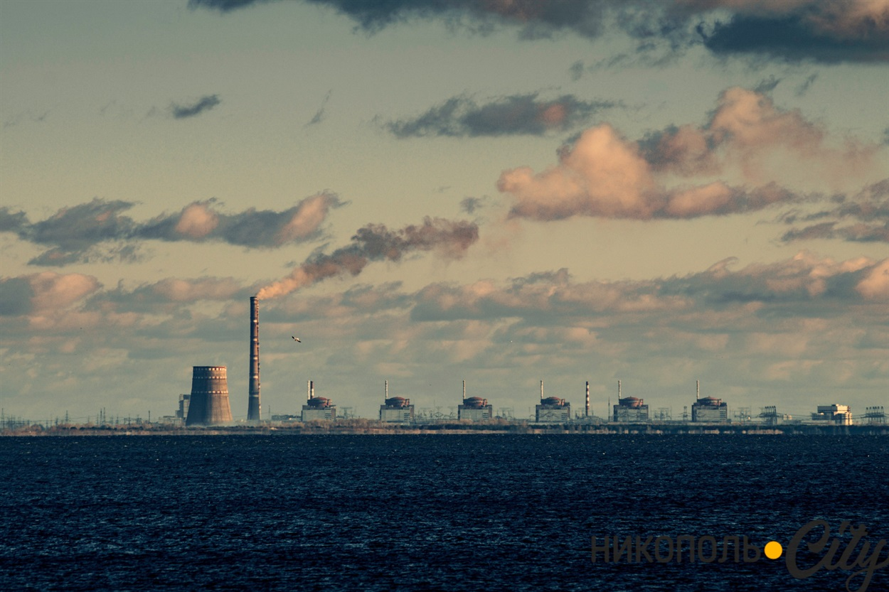
Фото зроблене після вторгнення РФ в Україну
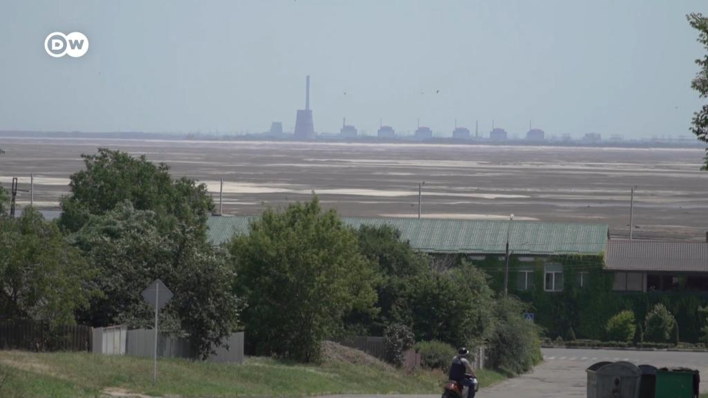
Наш відпочинок біля Каховського Водосховища, до початку війни
Набережна
Одне з улюблених місць відпочинку нікопольців. Усіх гостей міста відправляють помилуватися цими мальовничими пейзажами (дивіться пункт «Атомка»). У будь-яку пору року тут можна зустріти людей. І якщо взимку це переважно рибалки, то в теплу пору на набережній спостерігається наплив відпочивальників.
Фото зроблене до вторгнення РФ в Україну
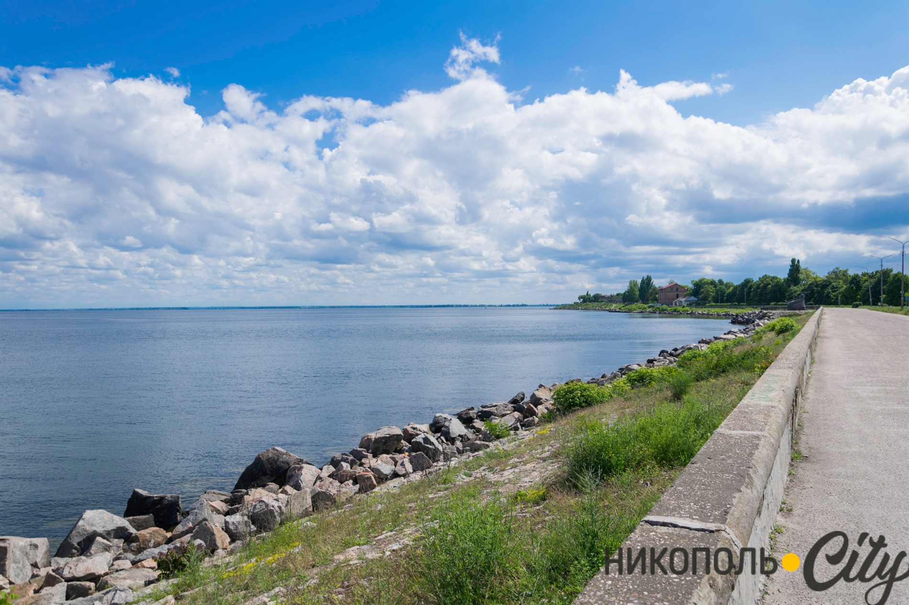
Фото зроблене до вторгнення РФ в Україну
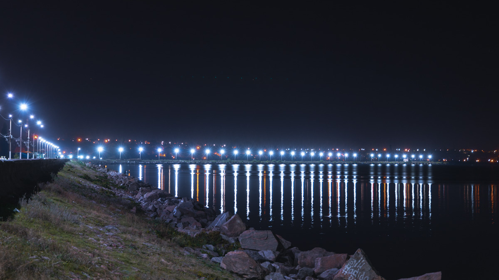
Фото зроблене після вторгнення РФ в Україну
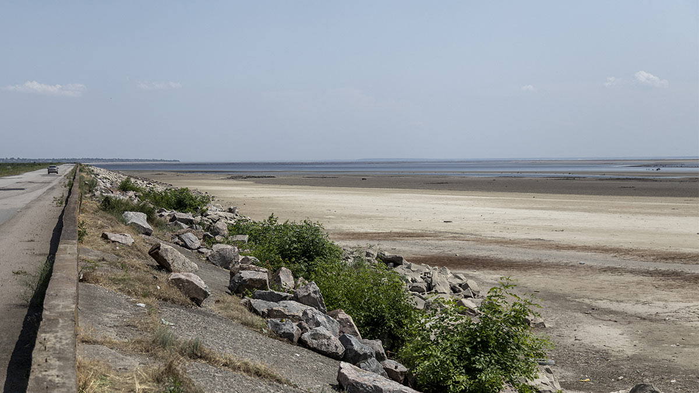
Пляж
До будівництва Каховського водосховища Нікополь омивали води Дніпра. У 1950-х роках було прийнято рішення створити штучне море. Під водами назавжди зникли дніпровські плавні, скіфські кургани та місця Запорозьких Січей. Для багатьох людей створення штучної водойми стало великою трагедією, адже вони змушені були залишати рідні села, які підлягали затопленню. Під час будівництва водного резервуара Нікополь відвідав кінорежисер Олександр Довженко, який зняв про цю подію фільм «Поема про море». У спілкуванні з простими жителями він часто чув фразу: «Нове наше море — нове наше горе». І справді, водосховище створило низку проблем. У наш час проблемою для нікопольців стало регулярне літнє цвітіння водоростей у воді. Через це в прилеглих до води районах стоїть специфічний запах.
Фото зроблене до вторгнення РФ в Україну
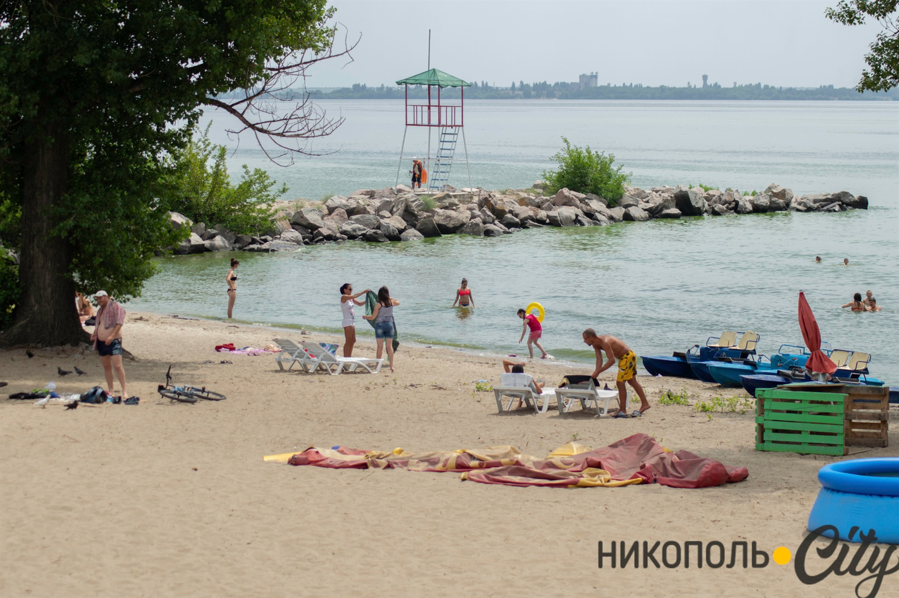
Фото зроблене після вторгнення РФ в Україну
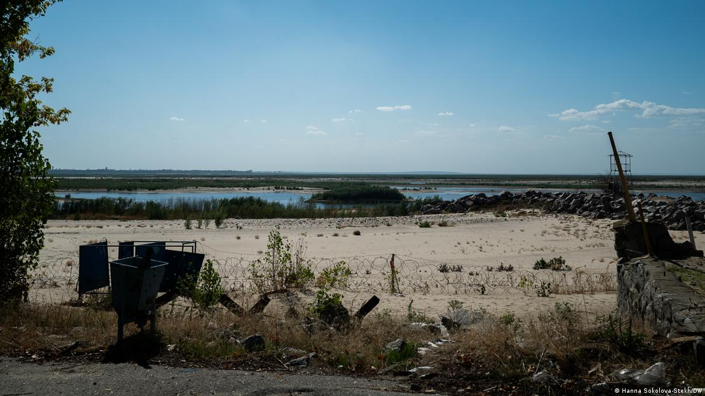
Яхт-клуб
меккою вітрильного спорту, а місцева школа вважалася однією з найсильніших в області. «Зоряний час» яхт-клубу припав на 70–80-ті роки, коли в клубі виходили на свої перші перегони та регати до 300 підлітків. Слава про нікопольську школу яхтингу ширилася по всьому Союзу. Вона виховала плеяду справжніх майстрів вітрильного спорту. Серед її вихованців чільне місце посідає, звісно ж, срібний призер Олімпійських ігор 1996 року в Атланті, чемпіон світу, Європи та СРСР Георгій Шайдуко. Величезна заслуга належить заслуженому тренеру СРСР і України, наставнику збірної СРСР у 1980-х роках Миколі Єсаулову.
Фото зроблене до вторгнення РФ в Україну
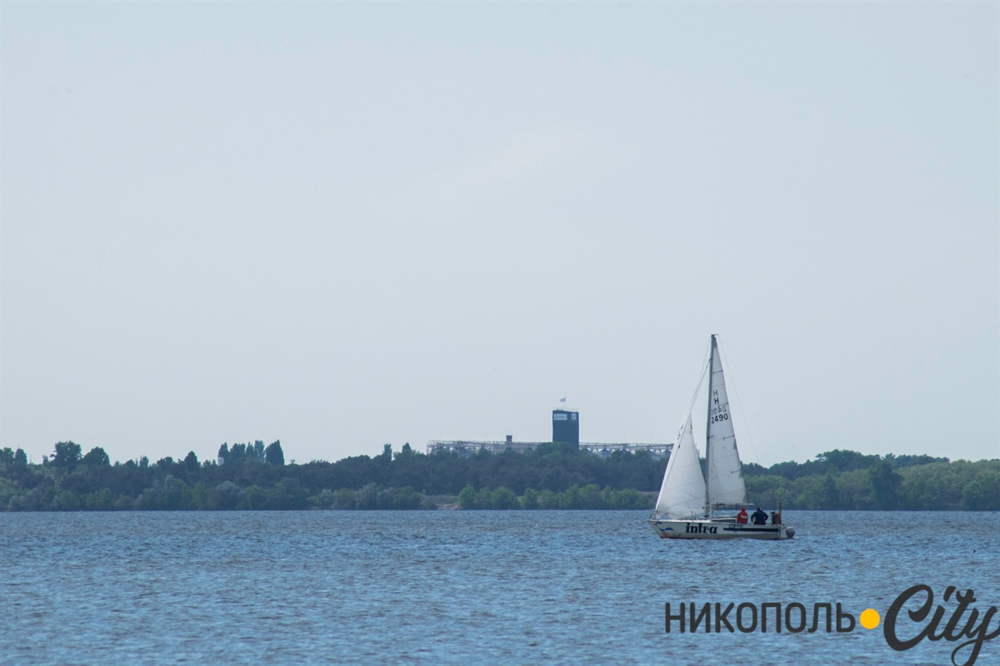
Фото зроблене до вторгнення РФ в Україну
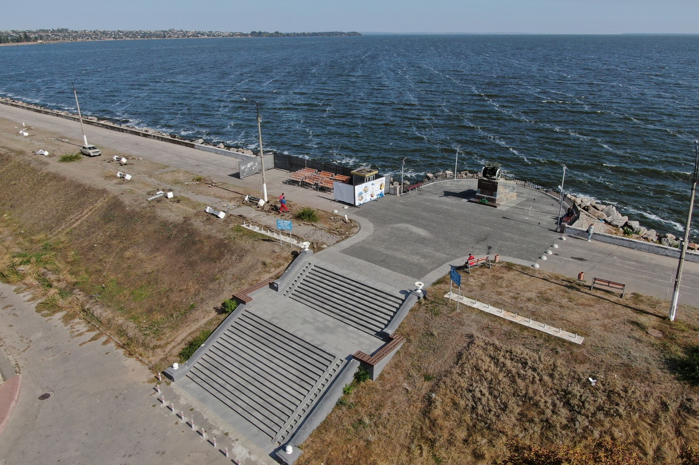
Виробництво у місті Нікополь
Нікопольський завод феросплавів
Нікопольський феросплавний завод (НЗФ) — один із найбільших підприємств металургійного комплексу України, найбільше феросплавне підприємство в Європі та друге у світі за обсягом виробництва марганцевих сплавів. Будівництво заводу розпочали у листопаді 1962 року. Датою народження заводу вважається 6 березня 1966 року — з моменту запуску флюсоплавильного цеху. 27 серпня 1968 року завод отримав першу продукцію. Від заводу в місті діють стадіон «Електрометалург», готель «Нікополь», палац спорту імені Бориса Величка (КСК) та інші установи. На честь працівників заводу названа одна з центральних вулиць міста — Електрометалургів.
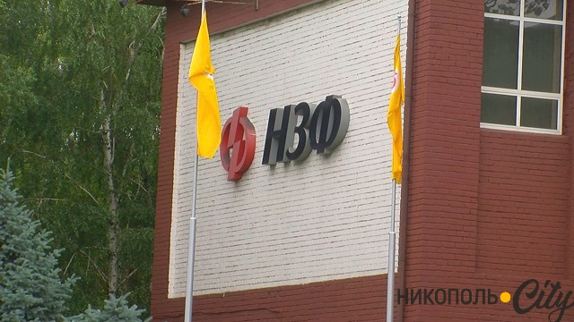
Південнотрубний завод – Інтерпайп Нікотьюб
Одне з найбільших трубних підприємств міста, яке спеціалізується на виробництві безшовних труб за вітчизняними та зарубіжними стандартами для різних видів промисловості, машинобудування, приладобудування, енергетичної галузі, а також труб загального призначення, що застосовуються в інших сферах промисловості. Вже кілька років компанія робить свій внесок у благоустрій Нікополя, зокрема міської набережної.
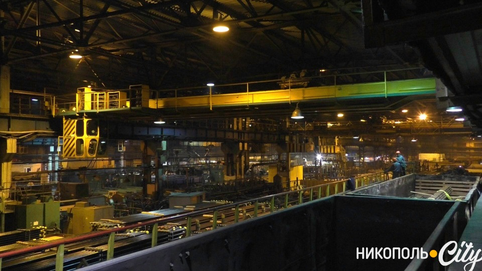